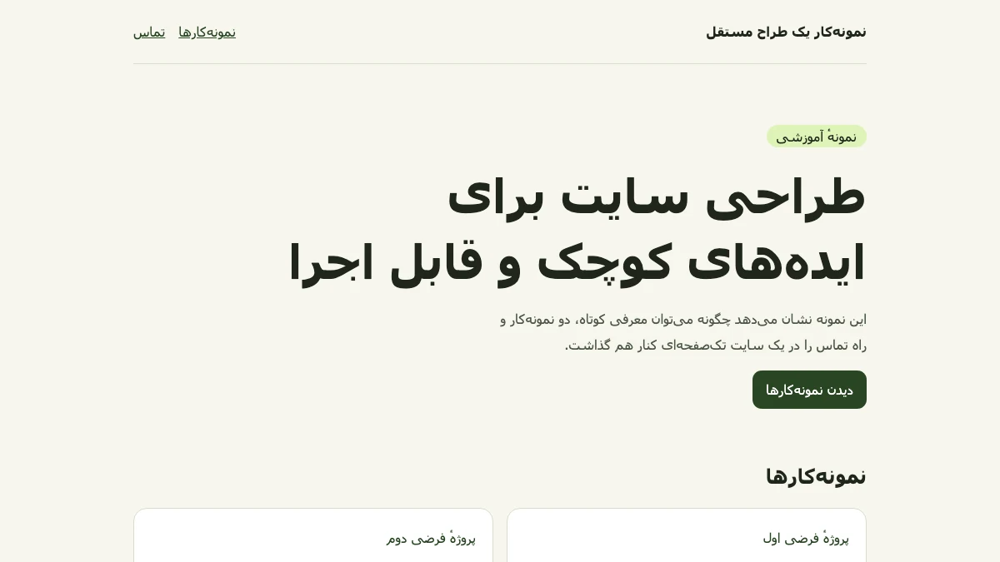

آموزش وایب کدینگ؛ ساخت اولین سایت با هوش مصنوعی
یک سایت نمونهکار فارسی بساز. با پرامپت شروع کن، خروجی را روی موبایل و دسکتاپ تست کن و نسخهٔ آماده را روی وب منتشر کن.
خروجی این تمرین
- پروژه
- سایت نمونهکار فارسی
- فایل نهایی
- index.html
- پیشنیاز
- مرورگر، ویرایشگر متن و یک دستیار کدنویسی
- انتشار
- GitHub Pages یا هاست
وایب کدینگ چیست و با چه ابزاری شروع کنیم؟
در وایب کدینگ، نتیجهای را که میخواهی با زبان طبیعی توضیح میدهی و از هوش مصنوعی میخواهی کد اولیه را بسازد یا تغییر بدهد. بعد نسخهٔ قابل اجرا را باز میکنی، چیزی را که مطابق نیازت کار نمیکند مشخص میکنی و درخواست بعدی را دقیقتر مینویسی. برای اولین پروژه همین چرخهٔ «درخواست، پیشنمایش، بازبینی و اصلاح» کافی است.
اگر ابزارت فقط متن و کد برمیگرداند، فایل خروجی را ذخیره کن و در مرورگر بازش کن. اگر دستیار به پوشهٔ پروژه دسترسی دارد، یک پوشهٔ جدید و خالی برای تمرین بساز و محدودهٔ تغییر را به همان فایل مشخص محدود کن. اگر بین ابزارها مرددی، مقایسهٔ دستیارهای کدنویسی با هوش مصنوعی کمک میکند انتخابت را بر اساس نوع کار انجام بدهی.
پروژهٔ عملی: سایت نمونهکار فارسی
یک صفحه میسازیم که بازدیدکننده در آن متوجه شود چه کاری انجام میدهی، دو نمونه ببیند و بتواند راه تماس را پیدا کند. خروجی یک فایل index.html با استایل داخلی است که میتوانی مستقیم در مرورگر باز کنی. برای این تمرین یک ویرایشگر متن، مرورگر و دستیار هوش مصنوعی کافی است.
- یک جمله دربارهٔ خودت، دو توضیح کوتاه برای نمونهکارها و یک راه تماس عمومی آماده کن. نمونهکار فرضی را بهعنوان تمرین معرفی کن.
- در پوشهٔ تمرین، فایلی به نام index.html بساز. از فایل نمونه یا پرامپت مرحلهٔ بعد برای ساخت نسخهٔ اول استفاده کن.
- صفحه را در مرورگر باز کن و پیش از تغییر ظاهر، مسیر «دیدن نمونهکارها ← تماس» را امتحان کن.

فایل آمادهٔ تمرین
پیشنمایش و فایل دانلودی یکساناند. فایل دانلودشده را به index.html تغییر نام بده و بخش معرفی، پروژهها و تماس را با اطلاعات خودت کامل کن.
سه پرامپت برای ساخت، رفع خطا و بازبینی
پرامپتها را مرحلهبهمرحله اجرا کن. نسخهٔ سالم هر مرحله را نگهدار تا اگر تغییر بعدی مشکلی ایجاد کرد، بتوانی به آن برگردی.
۱. ساخت نسخهٔ اول
برای من یک سایت نمونهکار تکصفحهای فارسی و راستچین در یک فایل index.html بساز. صفحه شامل معرفی کوتاه، دو کارت نمونهکار و بخش تماس باشد. منو و دکمهٔ اصلی به بخشهای داخل همین صفحه بروند. CSS داخل فایل باشد و صفحه بدون وابستگی خارجی باز شود. اطلاعات واقعی را فقط از متنی که در ادامه میدهم بردار. برای موارد ناقص جای خالی مشخص کن. در عرض ۳۶۰ پیکسل اسکرول افقی نداشته باشد و لینکها با صفحهکلید قابل دسترس باشند. در پایان، روش باز کردن فایل و مواردی را که هنوز باید خودم تست کنم بنویس.
۲. اصلاح یک مشکل مشخص
این فایل فعلی من است. در عرض ۳۶۰ پیکسل، چیدمان نمونهکارها را برای نمایش تکستونه بررسی کن. ابتدا بگو مشکل را در کدام بخش HTML یا CSS پیدا کردی. کوچکترین تغییر لازم را پیشنهاد بده و متن، لینکها و چیدمان دسکتاپ را حفظ کن. در پایان بگو تغییر را در مرورگر چطور بررسی کنم.
۳. بازبینی پیش از انتشار
این index.html را بازبینی کن. مقصد لینکهای داخل صفحه را با شناسهٔ بخشها تطبیق بده و مواردی مثل تماس آزمایشی، متن فرضی، اسکرول افقی، نبود نشانگر فوکوس و noindex را مشخص کن. نتیجه را به دو دسته تقسیم کن: مواردی که از روی کد قابل بررسیاند و مواردی که باید خودم در مرورگر یا نسخهٔ آنلاین امتحان کنم. منتظر نتیجهٔ بررسی من بمان و هنوز فایل را تغییر نده.
اگر ابزار گفت «تست شد»، گزارشش را بخوان. برای این پروژه، معیار پایان کار باز شدن صفحه، درست بودن لینکها و خوانایی در موبایل است. نتیجه را خودت هم در مرورگر ببین.
چکلیست تست پروژه
- موبایل و دسکتاپ: سایت را در عرض ۳۶۰ پیکسل و روی صفحهٔ بزرگ باز کن. متن فارسی، فاصلهٔ کارتها و شکستن آدرسهای طولانی را بررسی کن.
- لینک و صفحهکلید: با کلید Tab جلو برو، نشانگر فوکوس را ببین و لینکهای «نمونهکارها» و «تماس» را فعال کن.
- راه تماس: اگر لینک ایمیل یا پیامرسان اضافه کردی، آن را روی دستگاه واقعی باز کن. اگر فرم اضافه میکنی، تحویل واقعی پیام و رفتار فرم در خطا را جداگانه امتحان کن.
- آمادگی انتشار: نام، نمونهکار و اطلاعات آزمایشی را بازبینی کن. اگر نسخهٔ عمومی باید در گوگل دیده شود، برچسب noindex را از فایل تمرینی بردار.
انتشار پروژه با GitHub Pages یا هاست
مسیر اول: GitHub Pages
- در حساب خودت یک مخزن برای پروژه بساز و فایل index.html را در ریشهٔ شاخهٔ main قرار بده. پیش از عمومی کردن، مطمئن شو که فایل فقط اطلاعاتی را دارد که میخواهی منتشر کنی.
- از تنظیمات مخزن وارد Pages شو. گزینهٔ انتشار از شاخه (Deploy from a branch) را انتخاب کن و منبع را روی main / (root) بگذار. راهنمای رسمی تنظیم منبع انتشار جزئیات این مرحله را دارد.
- بعد از نمایش نشانی عمومی در تنظیمات Pages، آن را در مرورگر باز کن و مسیر نمونهکار و تماس را دوباره تست کن.
مسیر دوم: هاستی که از قبل داری
برای آزمایش، فایل را در پوشهٔ جدیدی زیر مسیر عمومی هاست قرار بده و نشانی همان پوشه را باز کن. اگر میخواهی سایت اصلی را جایگزین کنی، ابتدا از فایلهای فعلی نسخهٔ پشتیبان بگیر، سپس نسخهٔ جایگزین را از طریق نشانی دامنه و HTTPS بررسی کن. برای مراحل عمومی انتشار فایلها، راهنمای انتشار سایت MDN را ببین.
اگر هنوز بین سایتساز، وردپرس و کدنویسی انتخاب نکردهای، راهنمای ساخت سایت با هوش مصنوعی از صفر تا انتشار این مسیرها را کنار هم مقایسه میکند.
ویدیوی فارسی ساخت سایت با هوش مصنوعی
در این آموزش ویدیویی وحید پارسا، میتوانی یک مسیر دیگر برای ساخت سایت با کمک هوش مصنوعی را بهصورت تصویری دنبال کنی.
سؤالهای رایج
برای شروع باید برنامهنویسی بلد باشم؟
برای ساخت این صفحه لازم نیست از قبل برنامهنویس باشی. آشنایی با بخشهای اصلی یک فایل HTML و خواندن پیام خطا کمک میکند تغییرات را بفهمی و ایرادها را دقیقتر توضیح بدهی.
آیا همین روش برای فروشگاه یا سیستم ورود کافی است؟
این پروژه برای معرفی و نمونهکار است. امکاناتی مثل پرداخت، حساب کاربری یا ذخیرهٔ اطلاعات به زیرساخت و بررسی جداگانه نیاز دارند. ابتدا همان مسیر ساده را تا انتشار انجام بده، سپس هر قابلیت را جدا طراحی و آزمایش کن.